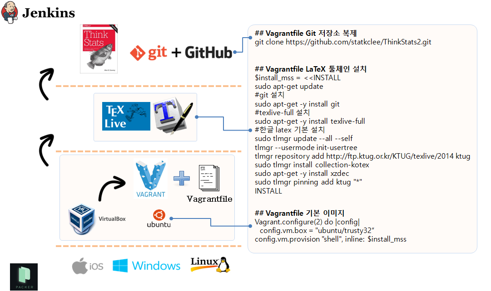

$100 달러 오픈 컴퓨터
한글 LaTeX 문서 환경 가상화
학습 목표
- 한글 LaTeX 문서 작업환경 가상화
- 실리콘(하드웨어)에 운영체제를 설치한다.
- 운영체제 위에 LaTeX 엔진과 한글 LaTeX 툴체인을 설치한다.
- Git 저장소에 한글 LaTeX 프로젝트를 복제한다.
- LaTeX 문서작업을 하고 최종 산출물을 출력한다.
1. LaTeX 테스트 사례 준비
LaTeX 문서 테스트 사례를 먼저 준비하여 한글 LaTeX 문서 작업을 본격 시작하기 전에 준비를 한다.
- 영문 LaTeX 문서 테스트 사례: 가장 기본이 되는 테스트 사례로
hello world문서를 작성해서 정상적으로 pdf 파일을 산출하는지 점검한다. - 영문 LaTeX 문서 다양한 기능 점검 사례: 목차, 색인, 참고문헌 등 기본적인 문서의 기능을 잘 동작하는지 점검한다.
- 목차(Table of Contents)
- 그림과 표
- 색인(makeindex)
- 참고문헌(bibtex)
- 한글 LaTeX 문서 테스트 사례: 한글 문서의 가장 기본이 되는 테스트 사례로
hello world문서를 작성해서 정상적으로 한글이 pdf 파일에 찍히는지를 점검한다. - 한글 LaTeX 문서 다양한 기능 점검 사례: 목차, 색인, 참고문헌 등 기본적인 문서의 기능을 잘 동작하는지 점검한다. 특히, 유니코드(utf-8)적용에 따른 줄간격, 글자간격 등 차이가 생길 수 있는 부분을 집중적으로 점검한다.
- 목차(Table of Contents)
- 그림과 표
- 색인(makeindex)
- 참고문헌(bibtex)
- HTML 산출물 점검:
.pdf,.ps,.dvi는 동일한 계열이라 하나가 되면 나머지는 자동으로 될 수 있지만,.tex파일을 HTML로 변환하는 것은 전혀 다른 문제로 단일 편집문서(LaTeX)에서.pdf와.html이 생성되도록 점검한다.hevea.sty를 저자는 사용했지만 다른 HTML 변환도구도 살펴보기를 권장한다.- Pandoc도 많이 사용되는 강력한 HTML문서 변환도구로 간단한 명령어로 HTML 파일을 자동생성한다. 예를 들어,
pandoc -s book.tex --mathjax -o book.html.
1.1. 영문 .tex 문서가 정상적으로 .pdf 파일을 생성하는지 시험한다.
pdflatex hello-world.tex 명령어를 실행하면 hello-world.pdf 파일을 생성한다. 물론 hello-world.aux , hello-world.log 파일로 함께 만들어낸다.
% hello-world.tex 견본 파일
\documentclass{article}
\begin{document}
Welcome to LaTeX Hello World!
% 한글을 사랑합니다.
\end{document}영문은 정상적으로 출력되나 한글은 그렇지 못할 수 있다. 따라서 적절하게 설정이 되었는지 다음 LaTeX 예제를 통해서 확인을 할 필요가 있다.
1.2. 한글 LaTeX 작업을 위해서 사용자 모드로 관련 팩키지를 설치한다.
% 한글견본 출처: 김도현, 2004년 동국대 법대, LaTeX으로의 초대 교재에서 발췌.
\documentclass{article}
\usepackage{dhucs}
\begin{document}
\title{첫번째 \LaTeX}
\author{아무개}
\maketitle
\section{들어가며}
나의 첫 \LaTeX\ 파일입니다.%
\footnote{이걸 어떻게 처리할까?}
\section{나오며}
시작하자마자 끝내려니 쑥스럽네요.
\end{document}2. 한글 LaTeX 툴 체인 설치
한글 LaTeX 툴 체인을 가상환경에서 구축하기 위해서는 Packer(패커), VirtualBox(가상상자), Vagrant(부랑자), Git(깃)과 필요에 따라서는 Jenkins(젠키스)를 설치해야 된다.
만약 리눅스기반 운영체제를 사용한다면, Docker(도커)를 기반으로 해서 한글 LaTeX 툴체인을 구축하는 것도 가능하다.
한글 LaTeX 가상환경 구축 도구
Packer
- Control panel -> System -> Advanced System settings -> Environment Variables -> System variables : PATH 추가 VirtualBox
Vagrant
Git *Jenkins

2.2. 부랑자(Vagrant) 환경 설정
기본적으로 부랑자(Vagrant)는 가상상자(VirtualBox)를 가정하고 시작된다. 따라서 가상상자와 함께 부랑자를 함께 먼저 본인이 사용할 컴퓨터 운영체제에 맞춰 설치한다.
$ vagrant init
$ ls
Vagrantfile
$ vagrant up
$ vagrant sshvagrant init명령어는 boilerplate 혹은 skeleton 으로 불리는Vagrantfile을 생성한다.nano Vagrantfile파일에 한글 LaTeX 설치 쉘스크립트를 복사하여 붙여넣는다.vagrant up명령어를 실행하면 기본 운영체제최신 우분투 64비트와 함께LaTeX(TexLive) 엔진과 함께 한글 설정, 그리고 HTML 생성을 위한hevea도 함께 설치한다. 만약 운영체제나 기타 다른 부분에서 사용자정의가 필요한 부분은 자유로이 편집해서 한글 LaTeX 작업용 가상 컴퓨터를 설치하면된다.vagrant ssh명령어를 통해서 한글 LaTeX이 설치된 가상컴퓨터에 접속한다.git clone https://github.com/statkclee/ThinkStats2.git명령어를 입력하면 작업 프로젝트 파일을 가상컴퓨터 내부로 가져온다.cd ThinkStats2\book & make all명령어를 실행하면.tex파일을 컴파일 해서.pdf파일을 자동 생성한다.
2.2. 한글 LaTeX 가상 컴퓨터 설치 설명
2.2.1. texlive 전체 엔진 설치
LaTeX 전체 엔진 및 전체 팩키지를 설치한다. sudo apt-get -y install texlive-full, sudo apt-get -y install texlive-xetex, texlive-luatex, texlive-lang-cjk 명령어를 통해서 한글을 처리하도록 관련 팩키지를 설치한다.
$ sudo apt-get -y install texlive-full
$ sudo apt-get -y install texlive-xetex, texlive-luatex, texlive-lang-cjk
$ sudo apt-get install xzdec
$ tlmgr --usermode init-usertree
$ tlmgr repository add http://ftp.ktug.org/KTUG/texlive/tlnet ktug
$ sudo tlmgr pinning add ktug "*"2.2.2. 통계적 사고(Think Stats2) 의존성 설치
sudo apt-get -y install hevea
sudo apt-get -y install evince2.3. 한글 LaTeX 출판을 위한 Vagrantfile
아무것도 설치되지 않은 깨끗한 리눅스 새로운 가상 컴퓨터에 LaTeX 관련 팩키지를 설치하고 테스트하면서 마지막으로 살아남은 쉘명령어를 쉘스크립트 형태로 정리하고 이를 Vagrantfile 파일에 복사해서 적어 넣고 향후 반복해서 재사용한다. 이를 Git 같은 버젼제어시스템에 넣고 관리를 하게되면 특히 효과를 극대화할 수 있다.
$install_mss = <<INSTALL
sudo apt-get update
#install git
sudo apt-get -y install git
#install C dependencies
sudo apt-get -y install libacl1-dev libgnutls-dev gcc make
#install packaging dependencies
sudo apt-get -i install build-essential fakeroot lintian devscripts debhelper ubuntu-dev-tools cowbuilder
#install LaTeX Full version
sudo apt-get -y install texlive-full
#install Korean LaTeX Dependencies
# sudo apt-get -y install collection-kotex
# sudo apt-get -y install texlive-xetex, texlive-luatex, texlive-lang-cjk
#
sudo tlmgr update --all --self
tlmgr --usermode init-usertree
# tlmgr repository add http://ftp.ktug.org/KTUG/texlive/tlnet ktug
tlmgr repository add http://ftp.ktug.or.kr/KTUG/texlive/2014 ktug
sudo tlmgr install collection-kotex
sudo apt-get -y install xzdec
sudo tlmgr pinning add ktug "*"
# Think Stat2 Dependencies - translated from LaTeX to hevea
sudo apt-get -y install hevea
sudo apt-get -y install evince
INSTALL
Vagrant.configure(2) do |config|
config.vm.box = "ubuntu/trusty32"
config.vm.provision "shell", inline: $install_mss
end3. 실리콘(하드웨어) 위에 운영체제 설치 - 우분투 Packer 설치 1
packer를 다운로드한 후에 압축을 풀고 경로를 지정해 주어 어디에서든지 packer 명령어를 사용할 수 있는 것이 핵심이다.
- 임의 명칭 디렉토리 생성한다.
packer도 좋다. packer디렉토리로 이동한다.wget명령어로
$ mkdir packer
$ cd packer
$ wget https://releases.hashicorp.com/packer/0.8.6/packer_0.8.6_linux_amd64.zip
$ sudo unzip packer_0.8.6_linux_amd64.zip
$ nano ~/.bashrc
$ export PATH=$PATH:~/packer/
$ reboot # 혹은 source ~/.bashrc3.1. Packer를 사용한 VirtualBox 구축
실리콘 위에 바로 Packer 를 사용해서 가상 컴퓨터를 생성하고 그 위에 한글 LaTeX 및 Git을 사용해서 응용프로그램을 개발하고 Jenkins를 사용해서 이를 바로 배포할 수 있다.
packer build -only=virtualbox-iso application-server.json실행cd virtualbox실행vagrant box add ubuntu-14.04.2-server-amd64-appserver_virtualbox.box --name devops-appserver실행vagrant up실행vagrant ssh명령어로 VirtualBox 접속